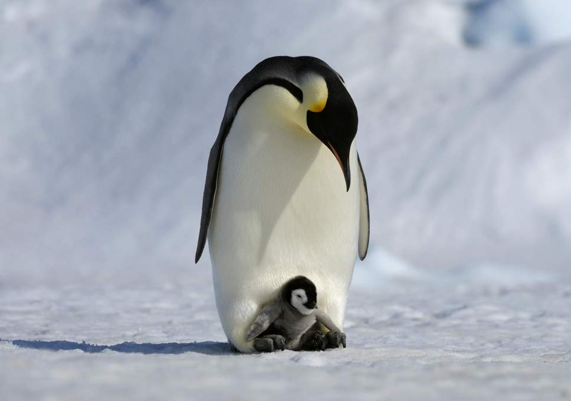

Pinguïns

Pinguïns of vetganzen zijn een orde van niet-vliegende zeevogels die alleen voorkomen op het zuidelijk halfrond. De pinguïns behoren tot de orde Sphenisciformes, klasse Aves (vogels). Alle moderne pinguïns behoren tot de familie van de Spheniscidae, maar er zijn uitgestorven soorten die buiten deze kroongroep vallen.
De pinguïns zijn gemakkelijk te onderscheiden van andere vogels en ze zijn volledig aangepast aan extreme koude en het leven in de zee. Ze hebben bijvoorbeeld een warm verenkleed. Pinguïns gebruiken hun vleugels om door het water te vliegen net zoals andere vogels door de lucht vliegen. Ze kunnen wel met een snelheid tot 30 km per uur door het water vliegen. De naam "pinguïn", die waarschijnlijk komt van het Keltische pen gwyn (witte kop), werd oorspronkelijk gebruikt voor de reuzenalk, de inmiddels uitgestorven tegenhanger (geen nauwe verwant) van de pinguïn op het noordelijk halfrond.
The word penguin first appears in the 16th century as a synonym for great auk.[2] When European explorers discovered what are today known as penguins in the Southern Hemisphere, they noticed their similar appearance to the great auk of the Northern Hemisphere, and named them after this bird, although they are not closely related.[3] The etymology of the word penguin is still debated. The English word is not apparently of French,[2] Breton[4] or Spanish[5] origin (the latter two are attributed to the French word pingouin "auk"), but first appears in English or Dutch.[2] Some dictionaries suggest a derivation from Welsh pen, "head" and gwyn, "white",[6] including the Oxford English Dictionary, the American Heritage Dictionary,[7] the Century Dictionary[7] and Merriam-Webster,[8] on the basis that the name was originally applied to the great auk, either because it was found on White Head Island (Welsh Pen Gwyn) in Newfoundland, or because it had white circles around its eyes (though the head was black). An alternative etymology links the word to Latin pinguis, which means "fat" or "oil".[9] Support for this etymology can be found in the alternative Germanic word for penguin, fettgans or "fat-goose", and the related Dutch word vetgans. Adult male penguins are called cocks, females hens; a group of penguins on land is a waddle, and a similar group in the water is a raft.
Bron: Wikipedia